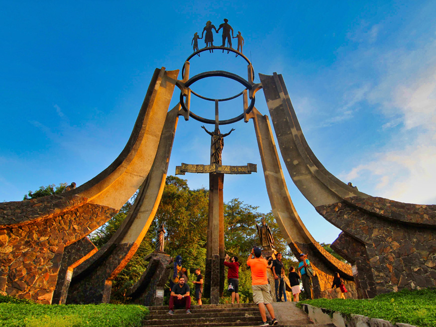
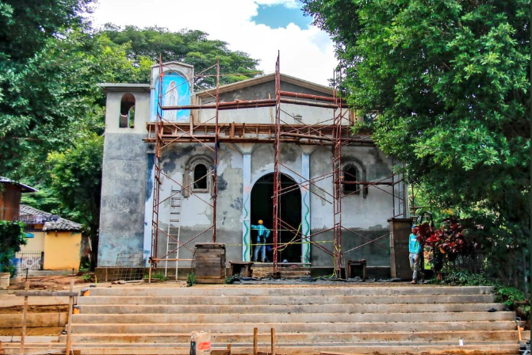

El Dolor de la Guerra: Crímenes contra la Humanidad
Durante la Guerra Civil salvadoreña, ocurrieron numerosos actos de violencia extrema contra la población civil, conocidos como masacres. Estos eventos, perpetrados por diferentes actores del conflicto, representan las páginas más oscuras de la guerra y un recordatorio de la necesidad de justicia y no repetición.
La Masacre de El Mozote y Lugares Aledaños (Diciembre de 1981)
Uno de los episodios más atroces de la guerra fue la masacre de El Mozote, en el departamento de Morazán. Entre el 10 y el 12 de diciembre de 1981, el Batallón Atlacatl del ejército salvadoreño asesinó a cientos de civiles desarmados, en su mayoría niños y mujeres. Las víctimas fueron acusadas de colaborar con la guerrilla, aunque no había pruebas de ello.
Este suceso, inicialmente negado por el gobierno y el ejército, fue documentado posteriormente por la Comisión de la Verdad para El Salvador de las Naciones Unidas. Representa un símbolo de la brutalidad del conflicto y la impunidad que lo rodeó por años.
Otros Incidentes Trágicos
Aunque El Mozote es la masacre más conocida, no fue la única. A lo largo del conflicto, se registraron otros eventos de gran impacto:
- Masacre del Sumpul (Mayo de 1980): Miles de campesinos intentando huir hacia Honduras fueron interceptados y masacrados.
- Asesinato de los Jesuitas (Noviembre de 1989): Seis sacerdotes jesuitas, su ama de llaves y la hija de esta fueron asesinados en la Universidad Centroamericana (UCA) por miembros de la Fuerza Armada. Este crimen generó condena internacional y evidenció la brutalidad del conflicto incluso en sus etapas finales.
Estos actos de barbarie resaltan la imperiosa necesidad de recordar para que tales tragedias no vuelvan a ocurrir y para que se haga justicia a las víctimas.